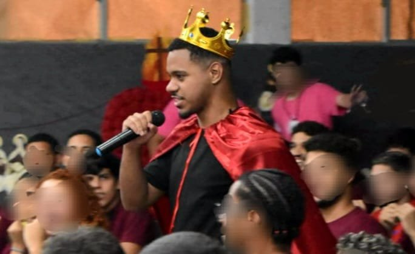
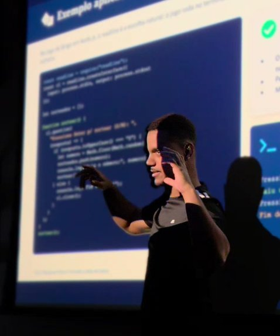

Deloitte
Bootcamp presencial · 2026
Bootcamp Deloitte — ServiceNow
Trilha presencial na plataforma ServiceNow, com projetos práticos de automação de processos.
Foco em Backend com Java — ampliando conhecimentos técnicos e construindo soluções eficientes e escaláveis.
Tecnologia com base em ADS (Unit) e vivência prática em projetos reais pela Residência Onboard (Porto Digital).
Venho de uma família simples e sempre fui uma criança curiosa, do tipo que gosta de resolver as coisas por conta própria — desde cedo já ajudava família e amigos com problema de celular, computador, TV, jogos e por aí vai.
Primeiro contato mais forte com tecnologia, através do Pacote Office. Queria entrar direto em TI, mas a oportunidade que apareceu foi na área administrativa.
Na sequência, entrei no técnico em Administração do Senai — curso mais longo, que segui em paralelo com o restante da trajetória.
Cerca de 2 meses depois de começar o técnico, consegui uma vaga de Jovem Aprendiz pelo Senai, contratado pela Perfil Plast. Rotinas do financeiro (inadimplência inclusa), apoio ao almoxarifado e à equipe de TI — cheguei a montar uma planilha em Excel/VBA pra mapear computadores e patrimônio. Também apoiei workshops de realidade aumentada.
O Embarque Digital me possibilitou cursar ADS pela Unit. Nesse período, fiz a Residência Onboard — projeto semestral do Porto Digital — onde atuei em squad com demandas reais de empresas: Even3, UStore e VoltzX.
App em Java para contagem e controle de inventário, com as funcionalidades da operação e melhorias que fui incorporando pelo caminho.
Depois de formado, enquanto buscava a primeira oportunidade na área: programa de desenvolvimento Frontend com uma unidade de gestão financeira.
Bootcamp DIO + Santander (Java e Spring Boot) e um curso focado em Spring Boot e Angular.
Trilha presencial na plataforma ServiceNow, com projetos práticos de automação de processos.
StudyWell (análise preditiva em Python) e o Ideathon Senac + UPE, com uma proposta de prontuário digital hospitalar.


Curioso desde pequeno — sempre fui aquele que queria entender como as coisas funcionavam por trás da tela. Hoje tento unir essa curiosidade com organização e planejamento no dia a dia, sem perder o lado extrovertido, mesmo sendo mais tímido quando o assunto é falar em público. Penso rápido e às vezes pareço distraído — mas é porque a cabeça já está em três lugares ao mesmo tempo. No momento, estou em busca da minha primeira oportunidade no mercado, pronto para colocar tudo isso em prática.
3 projetos da Residência Onboard (Porto Digital), além de projetos pessoais e acadêmicos.
IA para transcrever palestras e eventos da plataforma Even3.
Componentes reutilizáveis para agilizar o time de front-end da UStore.
MVP conectando terrenos, empresas de energia solar e investidores.
App em Java para contagem e controle de inventário, com as funcionalidades principais da operação e recursos extras conforme necessidades identificadas ao longo do projeto.
Análise preditiva em Python para estimar, a partir de um questionário, a probabilidade de indicadores relacionados à depressão — sem caráter de diagnóstico médico.
Proposta: desenvolver uma IA para transcrição automática de palestras e eventos na plataforma Even3. Solução: front-end em HTML, CSS e JavaScript; back-end modular em PHP com suporte a Node.js; integração com a API AssemblyAI para transcrição; banco de dados MySQL.
Trilhas, bootcamps e reconhecimentos ao longo da formação e da atuação prática em projetos reais.
Trilha presencial na plataforma ServiceNow, com projetos práticos de automação de processos.
Imersão em Java e Spring Boot, com certificação Santander via plataforma DIO.
Projeto semestral com demandas reais de empresas: Even3, UStore e VoltzX, atuando em squad.
Proposta de prontuário digital unificando sistemas dos três hospitais centrais da UPA de Recife. 5º lugar geral.
Programa de desenvolvimento Frontend em parceria com o Senac, com foco em prática de mercado. Em andamento.
Curso aprofundado em Programação Orientada a Objetos: classes, herança, polimorfismo e boas práticas.
Trilha presencial na plataforma ServiceNow, com projetos práticos de automação de processos.
Imersão focada em Java e Spring Boot, com certificação Santander via DIO.
Programa de desenvolvimento frontend do Serasa, em andamento.
Curso aprofundado em POO com Java: classes, herança, polimorfismo e boas práticas.
Curso atual, aplicando essas tecnologias na prática após consolidar a linguagem Java.
Projeto de unificação de prontuários e sistemas dos três hospitais centrais da UPA de Recife.